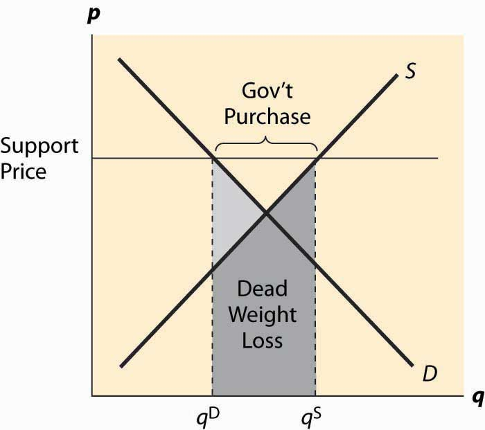

A price supportThe combination of a minimum price, or price floor, and government purchase of any surplus. is a combination of two programs—a minimum price, or price floor, and government purchase of any surplus. Thus, a price support is different from a price floor because, with a price floor, any excess production by sellers is a burden on the sellers. In contrast, with a price support, any excess production is a burden on the government.
The U.S. Department of Agriculture operates a price support for cheese and has possessed warehouses full of cheese in the past. There are also price supports for milk and other agricultural products.
Figure 5.10 Price supports
Figure 5.10 "Price supports" illustrates the effect of a support program. The government posts a minimum price it is willing to pay for a product, called the support priceThe minimum price the government is willing to pay for a product., and purchases any excess production offered on the market. The government purchases, which are the difference between the quantity supplied and quantity demanded, are illustrated in the figure. The cost of the program to the government is the support price times the quantity purchased, which is the area of the rectangle directly underneath the words “Gov’t Purchases.”
There are two kinds of deadweight loss in a price-support program. First, consumers who would like to buy at the equilibrium price are deterred by the higher prices, resulting in the usual deadweight loss, illustrated by the lighter shading. In addition, however, there are goods produced that are then either destroyed or put in warehouses and not consumed, which means the costs of production of those goods is also lost, resulting in a second deadweight loss. That loss is the cost of production, which is given by the supply curve, and is the area under the supply curve for the government purchases. It is shaded in a horizontal fashion. The total deadweight loss of the price support is the sum of these two individual losses. Unlike the case of a price floor or ceiling, a price support creates no ambiguity about what units are produced, or which consumers are willing and able to buy. Thus, the rationing aspect of a price floor or ceiling is not present for a price support, nor is the incentive to create a black market other than one created by selling the warehouse full of product.